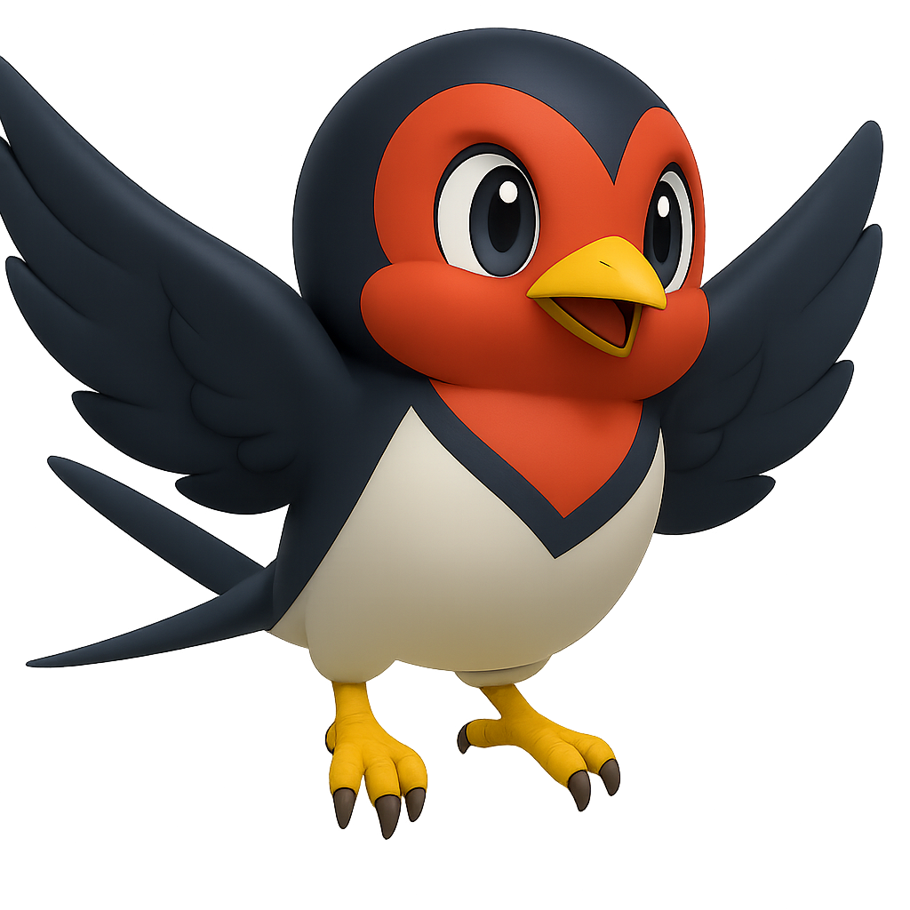

A03 + A04 · DESIGN REVIEW
Même univers. Plus de clarté.
Propositions isolées : les niveaux jouables restent inchangés. Ces scènes sont des maquettes, pas des captures du jeu.
A03
Les repères communs
Le bleu nuit reste celui de l’accueil. Dans les chasses, on conserve le ciel, l’ivoire et l’encre marine.
Ciel
#BFE2F8Ivoire#FFFDF5Encre#0E2B4AAction#2546C1Or#C8B37AUne lecture familière
Police système pour jouer. Compteurs monospace. Titres Barlow sur l’accueil.
03 / 10A04
Chaque mode garde sa place
HIRUNDU 01


3/10●●●○○○○○○○
Aracne ▰▰▰▱Tarantula ▰▰▱▱
La comparaison garde le même décor et la même taille de scène. Elle ne valide pas encore le cadrage, les collisions ou les performances du jeu réel.